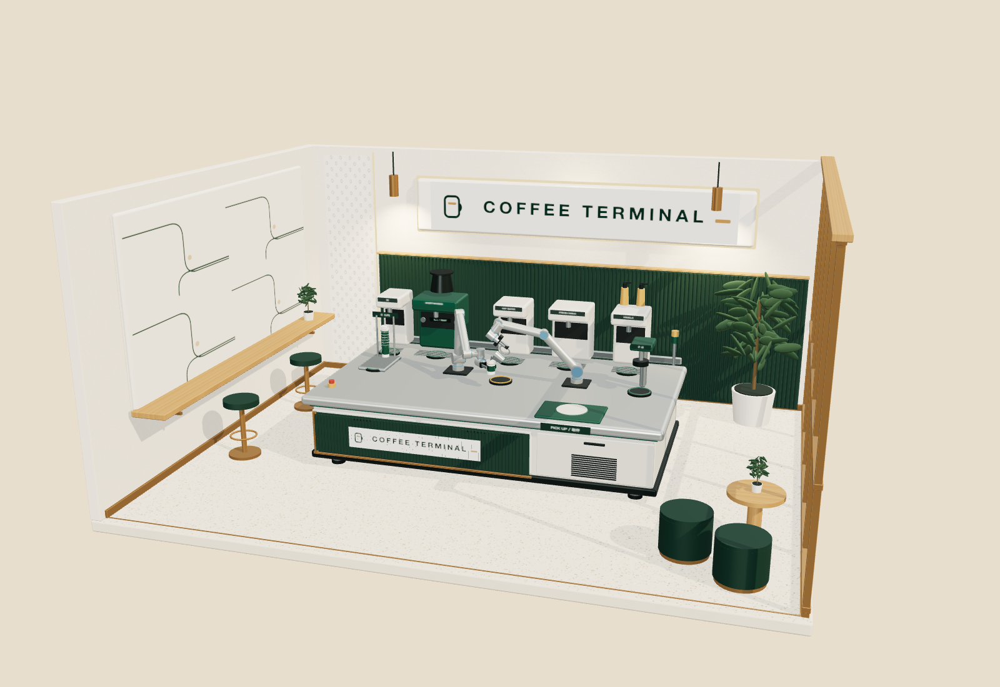

设备在线
COFFEE BOT 001
coffee-bot-001
01 / 01
订单处理中
取杯口令
—
冰拿铁
正在准备
步骤 1 / 5
预计还需 1 分 10 秒
— CRAFTED WITH CARE · 倾心现磨 —
✓
ORDER NO. / 取杯口令
—
订单已完成
请取走您的咖啡
请核对取单号与饮品 · 慢品醇香
10 秒后自动返回点单待机
✕
订单已取消
制作已安全终止
本单未产生扣款或款项已按原路退回
10 秒后自动返回点单待机
!
制作暂时中断
设备正在处理
请稍候或联系门店工作人员